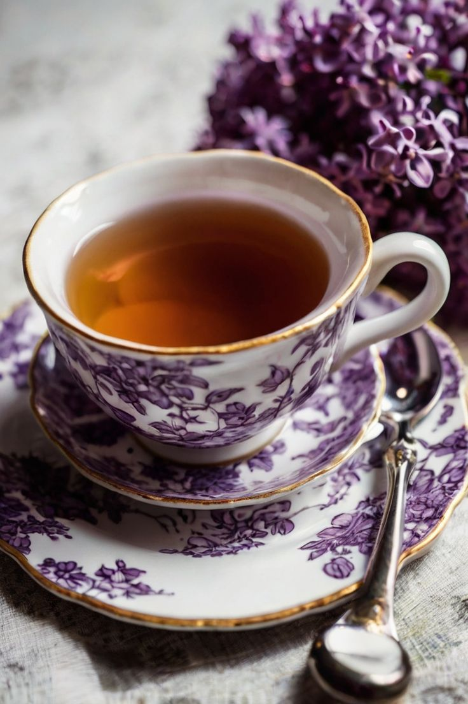
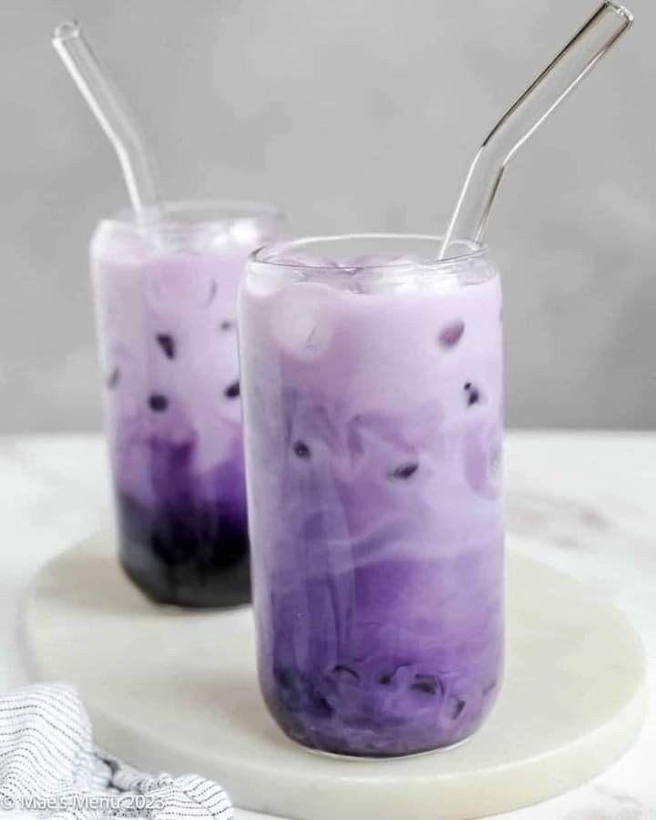

Bebidas Calientes Latte Capuchino Flat white Filtrado Matcha latte Chai latte Matcha Taro Latte Hojicha Genmaicha Yuzu Cha Sencha kukicha  Aca tenemos a uno de nuestros Tes mas saludables, el kukicha.
Bebidas Frias Ice Latte Filtrado Ice Matcha latte Ice Chai latte Ice Taro Latte Agua sin gas Soda Bubble tea  Aca tenemos a uno de nuestras bebidas mas exoticas el Ice Taro Latte.